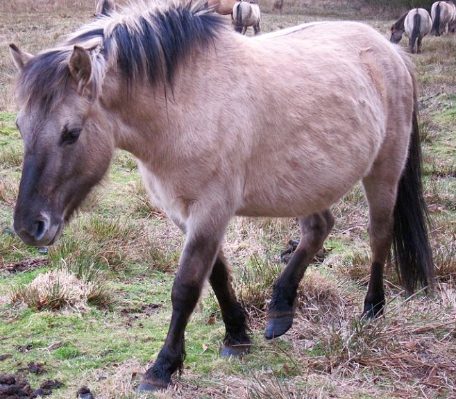

The Konik (Polish: Konik Polski or Konik Biłgorajski) or the Polish Primitive Horse is a small, semi-feral horse, originating in Poland. The Polish word konik (plural koniki) is the diminutive of koń, the Polish word for "horse" (sometimes confused with kuc, kucyk meaning "pony"). However, the name "konik" or "Polish konik" is used to refer to certain specific breeds. Koniks show many primitive markings, including a dun coat and dorsal stripe.
The breed has a strong and stocky build, small head with a straight profile, and a neck set low out of the chest. The Konik has a deep chest, a thick mane, and the hair coat is blue dun, often colloquially called "mouse-gray". The Konik is short in height, ranging from 130–140 cm (12.3–13.3 hands).[1] Minimum heartgirth measurement is 165 cm (65 in), and minimum cannon bone measurement 16.5 cm (6.5 in) for mares, 17.5 cm (6.9 in) for stallions.[2] Weight is 350–400 kg (770–880 lb).[3]
Tweet this
Wild horses ancestors were Polish tarpans similar to those discovered in Asia by the Russian explorer Nikolai Przewalski in 1876 year Przewalski's horse . They lived until the end of the 17th century in the wooded areas of eastern Poland , Lithuania and Prussia . In the vicinity of the Bialowieza Forest survived until 1780 , when it was taken and placed in the zoo of Counts of the Zamoyski near Biłgoraj . Around 1806 , due to poverty, they were distributed to nearby peasants . In 1914, Jan Grabowski and Stanislaw Schuch described small peasant mussels from Bilgoraj [1] . "The first attempts at conducting an organized primitive horse breeding , called Polish horses, were undertaken in Poland in 1923, at the State Stud of Janów Podlaski and in 1928 at the Dworzyszcze Folwark, belonging to the Krzemieniec Lyceum " [1] . Professor Tadeusz Vetulani introduced the name "Polish horse", he also proposed the existence of a forest tarpaulin . Thanks to his efforts, a horse with typical tarpana characteristics was started in the reserve conditions in the Białowieża Primeval Forest [1] . In September 1939 the herd numbered 40. During World War II, Germany stole horses and transported them to the Reich for tests conducted by German researchers [2] . After the end of the war, the rebuilding of the farm with the participation of a few horses scattered around the country and reindeer from Germany (outside the Białowieża) began. In 1949 a stud in Popielno was opened . In 1952 there was also a group of horses from Białowieża. In 1955 the stud in Popielno was taken over by the Polish Academy of Sciences , followed by the interrupted experiment by prof. Vetulani [1] [3] . Recently a different vision for the genesis of Polish horses has been published [4] [5] [6] .
Edit Konik in Roztocze National Park Koniks today are bred either in barns or open reserves and under human guidance. The Konik was bred for a larger shoulder height in past decades, to improve its value as a working horse. A more graceful appearance, especially of the head, was established, as well. Black and sorrel horses have been largely selected out, but still appear on occasion, as do white markings.[4] The simultaneous management of Koniks in both barns and reserves made it possible to compare the health and behaviour of the horses under different circumstances. For example, hoof diseases and hay allergies are more common in Koniks raised in barns than in reserves.[4] In Poland, Koniks currently live on nature reserves at Popielno, Roztocze National Park, Stobnica Research Station of the University of Life Sciences in Poznań. They are bred in controlled conditions at a state stud at Popielno, Sieraków. Private breeders currently own 310 mares and 90 stallions; the state studs own 120 mares and 50 stallions.[10] As it phenotypically resembles the extinct tarpan,[11] the Konik has also been introduced into nature reserves in other nations. One of the first was the Oostvaardersplassen in the Netherlands.[12] In 1995, a herd was released in de Kleine Weerd, a 12-hectare strip of land (roughly 100 m by 1 km) along the river Meuse near Maastricht. The area is open to the public, but people are advised not to go near the horses because their reactions are unpredictable. Following the success of this program, Koniks were also brought to Latvia and to the United Kingdom, where they were placed in Wicken Fen near Cambridge by the National Trust. Due to the efforts of the Wildwood Trust, a charity which operates the Wildwood Discovery Park, and the Kent Wildlife Trust, Koniks also now live on several additional reserves, including the Stodmarsh National Nature Reserve, Ham Fen National Nature Reserve, Whitehall Meadow, Sandwich Bay, and Park Gate Down. In addition, the Suffolk Wildlife Trust introduced Polish Koniks for grazing as part of a broad restoration project of the Redgrave and Lopham Fen. Sussex Wildlife Trust have recently introduced a small herd in and around the Mount Caburn nature reserve. The view that the Polish Konik is the most recent 'descendant' of the European wild horse has been debunked.[13][14][15] Mythologization and perceptions have made a mere Polish farm horse into an allegedly bred-back 'wild horse' and an icon of new grazing management in European nature reserves. [Tweet this!]